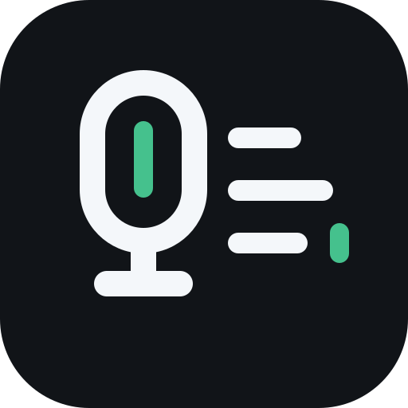
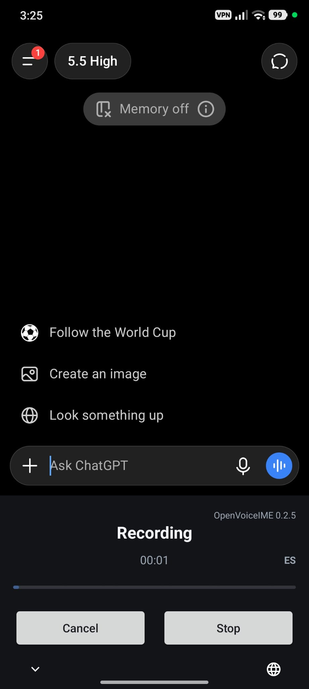
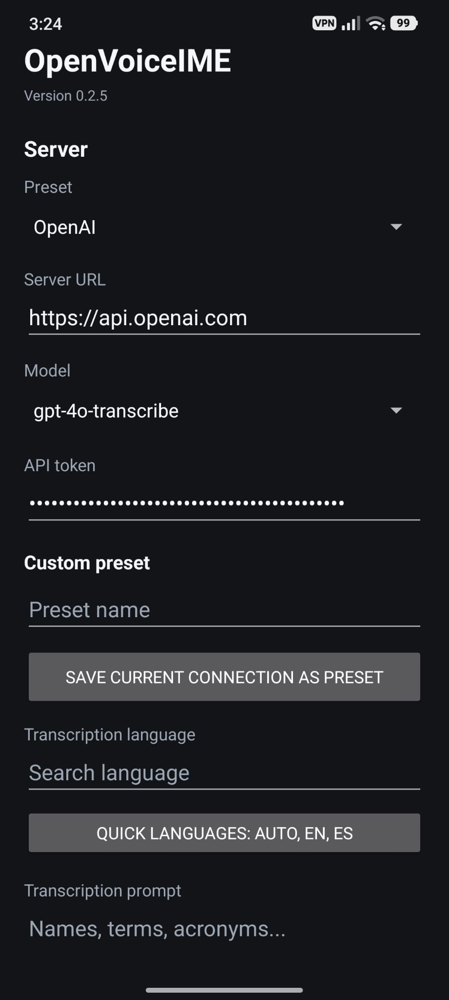
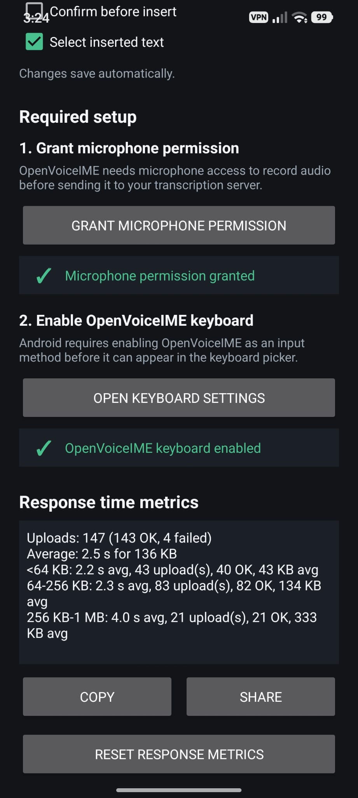

Provider control
Use the built-in OpenAI and Groq presets, or save a custom OpenAI-compatible endpoint for your own server.

OpenVoiceIMEAndroid voice input keyboard
OpenVoiceIME records speech, sends it to an OpenAI-compatible endpoint, and inserts the returned text into the app you are already using.

Setup
OpenVoiceIME is built for users who already have an API token or a compatible self-hosted transcription server.
Download the latest APK from GitHub Releases and allow installation from your browser or file manager.
Select OpenAI, Groq, or a custom OpenAI-compatible endpoint. Enter the model, token, language, and optional prompt context.
Grant microphone permission, enable OpenVoiceIME in Android keyboard settings, then switch keyboards when you want to dictate.


Use the built-in OpenAI and Groq presets, or save a custom OpenAI-compatible endpoint for your own server.
Add names, terms, acronyms, or domain context that should travel with transcription requests.
Test server connectivity and review local response-time metrics without sending data to a developer backend.
Compatibility
Privacy model
Audio is sent to the endpoint you configure. API tokens are stored locally using encrypted app storage. Release builds block cleartext HTTP, so normal use should go through HTTPS.
Audio goes to your configured provider.
Transcript text is inserted into the active app.
Provider retention depends on the provider you choose.
Read the full privacy policyGet the APK
After installing, Android will guide you through enabling OpenVoiceIME as an input method.